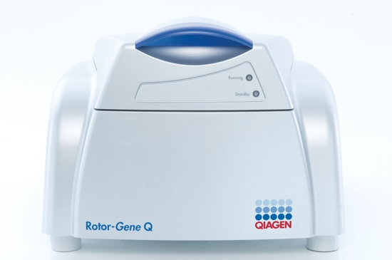
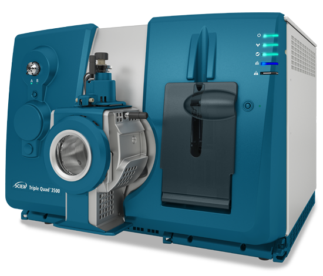
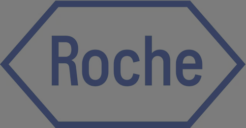

Hamed Abdollahi
DVM, PhD
Molecular Biologist
Veterinarian


Sanger Sequencer
I have used this powerful tool for DNA sequencing and fragment analysis.

RealTime PCR Thermocyclers
My work with qPCR and qRT-PCR includes both block and rotary real-time PCR cyclers.
PCR Thermocycler
I regularly utilize PCR Thermocyclers for routine PCR applications, diagnosis, library preparation, and cloning.

Triple Quadrupole Qandem Mass Spectrometry (MS/MS)
In the application of this sophisticated technology, I collaborated closely with a chemist operator on drug residue and small proteins detection experiments and have extensive experience in protein data analysis and interpretation.

High Performance Liquid Chromatographyg
Although I haven't directly operated HPLC, I have a solid theoretical background and have collaborated with a chemist operator on successful online and offline separation of biologics and proteins, including microcystin detection experiments.
Protein Electrophoresis and Blotting
I utilize 1-D and 2-D protein electrophoresis, ensuring accurate protein separation and analysis.

Nucleic Acid electrophoresis and blotting
My expertise extends to nucleic acid electrophoresis and blotting for precise DNA and RNA analysis.

Gel documentation system
I use UV and Stain-Free methods for imaging nucleic acids, as well as Coomassie or colorimetric blots for proteins and antigens.
Microplate Readers
My experience includes ELISA, protein quantification, enzyme kinetics, antibody level determination and immunity status check,and cell-based assays.
CO2 & standard incubators
II have used these incubators to maintain controlled environments with regulated temperature, humidity, and CO2 levels for cell and tissue culture, microbiology, and virology.
UV-Vis Spectrophotometers
I employ these spectrophotometers for absorption experiments and measurements of biological and chemical substances.

Upright & inverted Microscope
My work with microscopes includes cell culture, and in vivo and in vitro studies of tissue damage due to viruses and bacteria.

Ultracentrifuge
I have used ultracentrifuges for producing viral master seeds, antigen preparation, and protein purification.
High-Speed Centrifuge
My expertise with high-speed centrifuges includes the extraction and purification of total RNA from cells and tissues.
Refrigerated benchtop centrifuges
I routinely use these centrifuges for DNA, RNA, and protein extraction, purification, and pelleting.

Vacuum Centrifuge Concentrator
I use this concentrator for DNA pelleting, ensuring accurate and efficient sample preparation.

Mechanical & automated pipettes
Pipetting is a daily task in my molecular biology lab, and I am proficient with both mechanical and automated pipettes.
Animal isolator
I employ animal isolators for quality assurance in vaccine development and for studying the pathogenesis of viruses.
Lab Filtration & Ultrafiltration
My work in virology, proteomics, genomics, and vaccinology often involves lab filtration and ultrafiltration techniques.
Laboratory Balance
Precision is key in my work, and I regularly use balances capable of measuring small samples with up to 0.01 mg readability.

RNeasy Kits
I use these kits for the purification of RNA, ensuring high-quality results in my research.

QIAamp DNA Kits
These kits are essential for purifying genomic and mitochondrial DNA from tissues, swabs, blood, body fluids, and cells.
QIAGEN OneStep RT-PCR Kit
My work in genomics frequently involves real-time RT-PCR using this reliable kit.

QIAGEN Multiplex PCR Kit
This kit is integral to my work in cDNA synthesis and RNA multiplication in qRT-PCR.
HotStarTaq DNA Polymerase
I use this enzyme for cDNA synthesis, a critical step in genomics research.

Roche Reagents for molecular diagnostics
I have extensive experience with Roche Molecular Diagnostics products, giving me valuable insights that enable me to effectively compare and evaluate similar products from other companies, ensuring the best selection of tools and technologies for specific research and diagnostic needs.

ReadyPrep™ Protein Extraction Kit (Total Protein)
This kit is vital for preparing total cellular protein extracts from biological samples.

ELISA Technology
I have extensive experience using various types of ELISA in the laboratory for research and diagnostic purposes, with a strong background in evaluating ELISA kits..